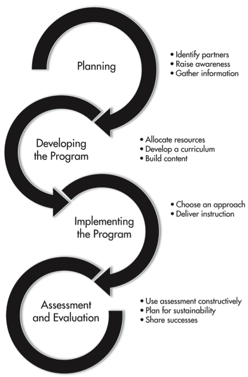

This page holds chapter 9 from the Data Information Literacy book. This page allows users to highlight and annotate the book contents through the use of the hypothesis installation. To add annotations, click the white arrow in the upper right hand corner, sign in or create an account, and click or highlight what you would like to annotate. To see existing highlights and annotations click the eye icon for annotations and the comment icon for comments.
The Data Information Literacy (DIL) project showed that developing educational programs on data for graduate students is a big area of opportunity for librarians. However, developing successful DIL programs can seem daunting, and you may be wondering: How do I get started? Do I have the knowledge to create a DIL program that will have an impact on students? Will I have the resources and support that I need to be successful? The DIL project teams, based in libraries at Purdue University (two teams), Cornell University, the University of Minnesota, and the University of Oregon, learned a great deal from their experiences. This chapter will share what we have learned to help other librarians create and implement DIL programs of their own. The information and guidance presented in this chapter is based on the collective experiences of the five DIL project teams in crafting their programs for graduate students in several science, technology, engineering, and mathematics (STEM) disciplines. We have included discussions of our approaches, pragmatic tips, and references to the resources that we used.
In reviewing the work done by the DIL project teams, we saw a natural progression of activities taken by each team. The stages of developing a DIL program are visualized in Figure 9.1 and are used to structure this chapter. Of course, developing a DIL program is not a totally linear process and we found that the stages built on one another in many interconnected ways. However, the figure and the structure of this chapter are meant to be illustrative of a general approach that could be applied by academic librarians.
Figure 9.1 shows each of the stages of developing a DIL program: planning, developing the program, implementing, and assessing and evaluating. You may find, as we did, a need to move back and forth between the stages: retracing, reconsidering, and cycling through the tasks within a stage several times. In the sections that follow, we outline the activities performed in each of these stages. For the planning stage, we have grouped together the information-gathering and awareness-raising activities that most often occur early in the process. For the development stage, we discuss actions necessary to develop the program, such as building the curriculum and the content in response to the needs identified in the planning stage. For the implementation stage, we pull together information about different approaches and issues that you may encounter in the process of delivering instruction. The approach that you choose may be determined by the needs identified in the planning stage, as well as by the types of content that you have chosen to address. For the final stage, assessment and evaluation, we provide information on using assessment to inform future iterations of your program and tools for planning for sustainability so that your DIL program continues to grow and flourish.

The DIL project teams identified a strong desire for support in data management skills. The academic library community identified data curation as a top trend in 2012 (Tenopir, Birch, & Allard, 2012). This area of support provides an opportunity for libraries to gain entry into the research life of students and faculty. Having librarians teach data management skills is advantageous for many reasons. First, many academic librarians have a broad understanding of scholarship in general and an in-depth understanding of disciplinary best practices in scholarly communication. Librarians also have the ability to identify and recommend resources, tools, and even skills that researchers need but may not be aware of. Librarians have experience and skills in the organization and dissemination of a variety of materials that may be applied to data management. It takes time, energy, and a fair amount of professional development to take on these roles, but doing so can result in new depths of involvement in the research mission of the academy and new partnerships with faculty and graduate students.
This section contains advice on identifying partners (e.g., faculty, fellow librarians, other campus service providers), raising awareness of the importance of DIL, and gathering information so that the DIL program is informed by the real needs of constituents.
In times of tight budgets and limited resources, it is important to invest time and energy strategically. As a library begins to develop its DIL program, it must align these activities with other information literacy and research support programs offered locally. For example, it might better serve the students, as well as you and your colleagues, to combine similar instructional approaches or integrate outcomes throughout a curriculum, as opposed to running parallel programs. Integrating and mapping the DIL outcomes into existing frameworks and assessment already taking place will reveal natural affinities between these information skill sets and will help ensure buy-in across library and campus partners.
The integration of programs is also more efficient for teaching and scheduling of library staff. Collaborating with fellow librarians and others who are already teaching related skills is the most efficient way to establish a new DIL program. In fact, in any environment, fellow librarians are one of the most important resources in the development and implementation of a DIL program. Collaboration can take many different forms: some librarians may be interested in co-teaching, others may adjust existing materials to fit their needs independently, while some may want only to be informed about progress. Whatever the form, collaboration with librarians is one of the surest ways to establish and grow your program.
Although data management and curation are topics that are often systemic to all disciplines, many faculty members may not see it as a pressing need to address or have the time to teach their students about DIL topics. Even if they are aware of the need, they may not be prepared to work with the library to address this topic to due misconceptions regarding library roles. Faculty can have a range of perceptions of the value that library and information science can bring to their laboratory or classroom. Given these and other differences among faculty, it can be challenging to identify potential faculty partners. However, the following strategies assisted the DIL project and may have some value for other institutions.
The “low-hanging fruit” strategy centers on leveraging your existing social capital: the connections that you have made with faculty and students through providing services to them. The people with whom you already have an established working relationship are more likely to be open to hearing your pitch on DIL. The partnerships forged by the DIL project teams with faculty members generally relied on existing relationships. The route to partnerships can vary, but may look like this:
“Coming to an understanding” refers to the progression of these initial opportunities to norming conversations during which the disciplinary faculty member and the librarian come to a consensus that there is an issue that needs to be addressed, define what that issue is, and begin to develop strategies to address it. In the DIL project, this was accomplished primarily through interviewing faculty and students.
“Working relationships” are developed as work with DIL progresses beyond informal conversations. This process generally happens as the librarian works closely with the disciplinary faculty members, asking questions and making suggestions. Needs identified may shift and potential strategies for addressing needs are not always realistic. Our teams struggled with time constraints as well as other challenges as the DIL project progressed. As with any inter- disciplinary project, several meetings are often spent identifying common ground, as well as identifying differences and possible roadblocks. Those who identify and develop workarounds for differences or roadblocks early have an advantage with regard to long-term success.
This project used a standardized tool, the Data Information Literacy Interview Instrument, to have a structured conversation around DIL needs of the students and faculty member partner. Our goal was to understand how data management and curation was practiced by the research team members and to identify areas of need as seen by the students and faculty in the lab. The structured interview encouraged professors to think carefully about issues of data management, and it allowed librarians to introduce the DIL competencies to faculty in order to find out analogous disciplinary terminology. These interviews helped us identify the most serious needs as perceived by the faculty member.
For the faculty and others in the lab, commitment to data management and curation within a research team is not without impact on resources. At the very least, time is invested in the learning and practice of new skills. New tools or technologies may be needed, which bring associated hardware, software, and time costs. The faculty and other stakeholders must see a compelling reason to invest scarce resources into developing and engaging in a DIL program.
These are arguments that can be made that may have an impact on a DIL project’s disciplinary professors:
Each of these points may be effective for some faculty members. The level of impact may be dependent upon rank, professional obligations, disciplinary expectations, and personal opinions and habits. For an untenured assistant professor, the highest priority may be to create a strong case for tenure. Therefore, emphasizing the impact that can result from publishing data could be an effective tool. For a full professor with a long-established re- search history, the argument for safeguarding the knowledge that they gathered throughout their career and making it available for future use may be more compelling. Getting to know the faculty members’ priorities before having a conversation will allow the librarian to select the approach most likely to succeed.
The goal of the project was to create a tailored solution for each individual faculty member and research group. In the process, disciplinary or situational constraints were identified to provide an educational intervention that met the needs of the students and faculty partners. In the case of the team from the University of Oregon, the research group was completing their work on a grant. Therefore a significant obstacle was the very short time frame available before the project ended. By being flexible, the team was able to create interventions that addressed the faculty researcher’s needs and time constraints while meeting the goals of the DIL project.
In our case, the actual approach for recruiting faculty to the DIL project often started from a reflective conversation during which disciplinary professors considered how well their students managed data. In nearly every case, the professors expressed some serious concerns and needs around the data practices of their students—concerns that the professor did not have the time or expertise to address. The goal was then to convert an observed need(s) into an educational program targeted to address the need(s).
A key component to success with the DIL project was developing an understanding of any disciplinary norms with data and incorporating these norms into our educational programming wherever possible. Conducting an environmental scan will provide baseline knowledge that can help you develop your educational program. We had success reviewing the scholarly literature of the discipline along with reports, websites, and other relevant materials produced by organizations or agencies affiliated with the discipline. In addition, conducting an environmental scan of local data management and curation practices will familiarize you with disciplinary attitudes and behaviors. Spend time learning about practices in the department through identifying related resources such as courses on research ethics, training for graduate research assistants, or more informal manuals of practice available on department websites.
Our suggestions for performing an environmental scan include the following:
There are many potential places to look for information, and as interest in data management continues to grow, the amount of information will increase. Some fields are further along than others and therefore have a much greater body of literature and online resources associated with data management. In our case, the teams focusing on ecology and related subjects found more information than the teams focusing on engineering.
You may want to increase the scope of the environmental scan beyond disciplinary norms and include resources at your institution. Questions that you may want to ask include:
Conversations with additional stakeholders may allow for the identification of additional needs and factors or clarify possible responses to include in your DIL program. The environmental scan may help you to identify potential collaborators as well.
Early in the process, each of the DIL teams set out to increase our understanding of our respective disciplines by conducting an environmental scan of the discipline. Our intention was to identify how each discipline recognized, discussed, and addressed research data management and curation issues. As expected, the quantity and quality of the materials found by each team varied, but every team was better informed in their interactions with faculty and students. For example, as a result of preliminary searching in the library catalog, the Cornell librarian team member brought a book published by The Long Term Ecological Research Network on data management to a meeting with the faculty. The faculty member had worked with one of the authors and was very interested in reading the book. The other DIL teams had similar experiences and found that faculty appreciated the librarians’ ability to find pertinent disciplinary information and bring these materials to their attention.
We hypothesized from the beginning that researchers from different disciplines would interpret the competencies differently, due to specialized practices or cultural norms. This proved to be true in each of the five DIL case studies. However, we also found different data practices within the subfields of disciplines or even among individual projects. For example, though civil engineering as a discipline is still considering how to respond to challenges in managing and curating data, the University of Minnesota team partnered with a research group that was affiliated with the Net- work for Earthquake Engineering Simulation (NEES). NEES has an online virtual research platform, NEEShub.org, that includes a data repository. The University of Minnesota team reviewed materials produced by NEEShub and incorporated them into their educational pro- gram, and vice versa. NEEShub.org incorporated a version of the team’s instructional materials for its online educational offerings.
Collaborating with faculty is often both challenging and very rewarding. Faculty are busy people, so it can be difficult for them to find the time to focus on a collaboration like this. In addition, their attention may be divided among research, teaching, and administrative duties. Ideally, you will work with faculty to identify the needs of the students and to deter- mine the timing and means of delivering the instruction. You will need to work together to determine what skills you can reasonably ad- dress. Most likely neither of you will have the expertise to address all of the students’ needs, but you will have complementary skills and can bring in outside experts as needed.
The time needed to address all of these is- sues will vary with the degree of involvement of the faculty and the scope of your program. At minimum, a substantive initial meeting to discuss student needs, timing, and means of de- livery will begin the process. If you are offering a one-session workshop, that may be all of the time you require for planning. However, developing a project larger in scope, such as a series of classes or a mini-course, may require much more time to discuss and plan course content and delivery.
Based on our experiences working with faculty collaborators on the DIL project, we offer these recommendations:
Graduate students are an important constituency for academic libraries. They are often at the research frontline, not only in data collection, processing, and analysis, but also in man- aging, describing, and documenting research data. In our experience, graduate students generally receive minimal training to take on these important tasks. Working with graduate students to develop and implement educational programming is a way for librarians to address a critical need of students and faculty, and a way to build or strengthen connections with this important user group.
In planning and developing instruction in DIL competencies for graduate students, you must gain an understanding of their environment and their needs from their perspective. Graduate students often engage in multiple roles: student, member of a research project, instructor, and so forth. The nature and intent of the educational programming that you develop will shape your interactions with the graduate students that you intend to target. Plan to spend some time talking and interacting with the graduate students you are targeting. We have found that graduate students’ interpretations of their environment, roles, and perceived needs often vary greatly from those expressed by their faculty advisor. Graduate students will likely provide you with a more nuanced and complete understanding of how DIL competencies are acquired and practiced, as well as how you could respond to any gaps.
Although there are likely to be differences in the lives of graduate students according to their discipline, area of research, institution, and so forth, we found the following elements to be true of most of the graduate students we worked with in the DIL project:
Although many factors complicate making connections and working with graduate students on developing data competencies, it can be done. There are several key considerations in planning and developing educational programs for this population:
Once you’ve established partners and determined needs, it’s time to develop your program. This section contains advice on allocating resources (time, money, expertise, and so forth), developing a curriculum in response to local interest and needs, and crafting the materials that you’ll teach.
When looking toward implementation, you should consider the resources available to you. What time, money, and expertise will you need to carry out the program, and how well do those match the resources available at your institution? What technology do you need? Do you need additional training? Where will you teach? At what scale should you be planning your DIL program? The answers to these and other questions should be derived from the information you gathered during the planning stage. For example, online educational resources are often the most scalable, but there is a substantial up- front cost in developing modules, such as gaining expertise (or hiring others) in using online learning technologies. On the other hand, in- person instruction demands can rapidly outstrip the available time of instructors. The services or resources that you previously identified that address similar needs may help you to make decisions. It may be easier to use the same technology others are using and substantially decrease the cost of developing online resources to the point that it becomes more sustainable than doing in-person instruction. If your organization has a centralized information literacy program, coordinating with it may be part of your plan, particularly if your program extends across subject liaison areas. As you are working to flesh out the framework of your DIL program, it is essential to determine whether collaborators are on board and what times would work best for them. What are they able to commit to? Recruiting other librarians to collaborate on creating programmatic instruction will help spread the work around as well, but again, influencing others to be a part of the program will likely be necessary. Do you have enough buy-in from collaborators to develop the DIL program at the scale you would like, or do you need to adjust your expectations to better match the available resources? Available resources will have a large effect on the scale and scope of the program that you are able to develop.
Developing an effective and successful curriculum starts with learning the needs of your constituencies to determine which learning goals and outcomes will most resonate with, and benefit, your students. Whether using a structured interview tool, such as the Data Information Literacy Interview Tool (http://dx.doi.org/10.5703/1288284315510), or a tool developed in house, such as a quick survey sent to students to identify pain points and areas of interest, this feedback will help guide curriculum development.
Upon completion of the needs assessment, the DIL instructor(s) will want to look through the identified topics of interest and begin to prioritize which topics to include in the curriculum. Some factors to consider include the length of instruction, the mode of instruction (e.g., online videos, in-person workshop), and whether any prerequisites should exist (i.e., do students need to have some baseline skills?). You should also consider your own areas of knowledge and expertise; certain skills may fall outside the instructors’ skill sets. Will you not include these skills, or will you recruit outside experts? For example, the University of Minnesota team found a user need in skills related to data visualization and analysis. Not confident in teaching these discipline-specific areas, the team incorporated campus resources where students could get more expert assistance in these areas, such as training on statistical tools and advanced Excel techniques.
At this point in the process it can be valuable to bring stakeholders (faculty, research advisors) into the instructional planning to act as sounding boards for the proposed goals and outcomes of your instructional intervention. These conversations can act as reality checks to make sure that that information gathered and decisions made regarding which skills to cover align with faculty goals. These conversations also assist with managing stake- holder expectations, providing these key players with a sneak preview (and opportunity to provide feedback) before the instruction is implemented.
Instructors also need to be realistic in their expectations of student comprehension when determining the scope of information that can be effectively conveyed and successfully transmitted in the time allotted. For many students, this curriculum will be their first instruction in DIL, so they will need time to orient themselves.
With the information gained from interviews with faculty and graduate students, each DIL team set out to identify instructional interventions to ad- dress the gaps that we found in the graduate cur- riculum covering data management skills. How- ever, each team found that students and faculty expressed a potential interest in receiving training around almost every one of the DIL competencies. The Cornell team, for example, used the following questions to help them narrow down which of the competencies to focus on:
After answering these questions in concert with the disciplinary faculty, the team decided to fo- cus on these four DIL areas: data management and organization, data analysis and visualization, data sharing, and data quality and documentation.
After determining which DIL competencies are most critical to the target audience, the next step is developing learning outcomes for instruction. “Learning outcomes are statements of what a successful learner is expected to be able to do at the end of the process of a learning experience such as the course unit or the course model” (Gogus, 2012b, p. 1950). Although the terms are often used interchange- ably, learning outcomes are distinguished from learning objectives as they tend to go beyond the general aims or goals of the instruction to the resulting expectations and evidence of what a student knows or can do after instruction (Gogus, 2012a). Without a clear idea of exactly what students need to learn or accomplish, it is difficult, if not impossible, to design effective instruction or assess whether or not it is successful; therefore, specifying learning outcomes is an essential first step.
Good learning outcomes are specific, measurable or observable, clear, aligned with activities and assessments, and student centered rather than instructor centered. They also specify the criteria for and the level of student performance and begin with action verbs. Bloom’s taxonomy is an excellent source for action verbs and is widely used as an educational tool for classifying goals and outcomes (Gogus, 2012a).
The DIL competencies identified by Carlson, Fosmire, Miller, and Sapp Nelson (see Chapter 1 of this book) were a useful starting place for generating and refining the specific learning outcomes for our educational programs. In order to turn a DIL competency into a learning outcome, we re- placed the more vague terms such as familiarize or understand with more action-oriented verbs such as locate or define. We described each learning objective as follows: learning area, preliminary outcomes / objectives / learning goals, and possible pedagogy. For example, from the broad competency theme of discovery and acquisition of data, the following learning outcomes are possible:
Note that these learning outcomes are more specific, measurable or observable, and clear than the more generic and unmeasurable “become familiar with data repositories in the discipline.” Also note that many different learning outcomes could be developed to address the broad competency.
Assessment should be considered early in the DIL program planning process, even before designing your instruction. However, many librarians are not assessment experts (including most of us in the DIL project), which may make the idea of assessment somewhat daunting. Fortunately, we found that by keeping a few basic principles in mind, assessment was not so foreign. Plus, specifying learning out- comes is the first step in planning for assessment, so if you are following along, you have already started defining your assessment with- out realizing it.
Assessment of student learning is the process of understanding what participants know and can do in relation to the outcomes that you are trying to achieve. It is not enough to say we have covered certain DIL topics and now our work is done. Without getting feedback from our students and seeing if it measures up to our criteria for success, it is impossible to know whether students have learned DIL skills and are able to apply their knowledge or transfer it to other situations.
There are two types of assessment—formative and summative—each with several levels of assessment: institutional, program-level, and instruction-session level. Formative assessment occurs during the instructional process and provides feedback for the students on how they are doing. This lets instructors know how well students are receiving the instruction early on and allows for course corrections and clarifications. Summative assessment occurs after the instruction concludes and provides measures of how well the instructional outcomes have been achieved and the efficacy of the instruction. Classroom (or instruction session) assessment of student learning is outcomes based and focuses on what students demonstrably know and can do after instruction. This may include measures such as examination of final assignments or projects using a rubric (a defined standard of performance) as well as pre- and post-tests. Program-level assessment is discussed in the final section of this chapter, “Assessment and Evaluation.”
The more opportunities that students have to practice and receive direct and timely feed- back on their skills, in accordance with specific criteria and in situations they will encounter in the real world (or as close as possible), the more likely that learning will be achieved (Radcliff,2007). This can happen in a number of ways. One of the most effective is course-integrated, outcomes-based assessment that uses learning outcomes as the goals to measure student accomplishment. Planning activities that allow students to practice their newly learned skills and to get or give feedback can help you as the instructor gauge whether students are grasping the concepts taught.
Assessment, particularly outcomes-based assessment, can be one of the most challenging parts of developing an educational program. However, you may already have resources available at your campus (such as research and assessment units, survey centers and tools, and so forth) to assist you in crafting a workable approach for assessing your DIL program. If you are just getting started in crafting your DIL program, you may want to begin by employing lightweight methods, like the 1-minute paper, to make the process of assessment less onerous. The 1-minute paper exercise is a way to quickly check for students’ self-reported understanding or confusion. The method is simply a very short in-class writing activity that can be completed in 1 minute or less, by asking students to respond to a question designed to provide the instructor with feedback about their learning. For example, a popular set of questions to ask at the end of a session for a 1-minute paper is (1) What have you learned? and (2) What do you still have questions about? Although it is common to use open-ended and reflective questions, 1-minute papers are very adaptable and can be used for a variety of purposes depending on the questions asked. As you become more comfortable with your DIL program, you can add in more advanced approaches to ascertain its impact on student knowledge and behaviors with DIL topics.
The DIL teams used several student assessment methods. The following examples show that success can be achieved using a mix of both formal and informal, and formative and summative, methods when measuring student success.
Formative: Several teams (both Purdue teams and the University of Oregon team) conducted formative assessments that included informal examinations of student-created materials, feed- back on in-class exercises, or “1-minute paper” reflections to gauge students’ learning in order to give feedback and make course corrections.
Summative: The Carlson and Sapp Nelson team from Purdue created a rubric to allow them- selves and the TAs to judge the quality of students’ code. They also examined students’ final design notebooks and attended the students’ final design reviews to give feedback.
Combination of formative and summative: Two teams, Cornell and the University of Minnesota, had students complete data management plans (DMPs) in successive sections to provide formative assessment and then used the final DMPs for summative assessment. They both assessed the DMPs according to the criteria on a rubric, which can be found in the team chapters.
Once you’ve determined what to teach, developing your teaching materials is the next step. It is critically important to capture the attention of the students early and often, and you should build your instructional content with this in mind. Successful engagement of students can be accomplished by tailoring your instruction specifically to their needs and situations. One approach would be to solicit real-world stories of data loss or error as a result of less than ideal data management. Sharing these stories early on in your DIL program may capture students’ attention. Ideally these stories come from faculty (or fellow students), which makes the impact these losses have on work real. These stories are unfortunately all too common, so finding them should not be difficult. Drawing students into the topic at the outset and facilitating their buy-in will pave the way for a successful instructional session.
The content of your session can be delivered in a variety of ways. Two common approaches are the instructor-led lecture on specific topics, and implementing active learning–based activities that allow students to get hands-on experience with some specific data practices. (More information on active learning can be found on the University of Minnesota’s Center for Teaching and Learning website: http://www1.umn.edu/ohr/teachlearn/tutorials/active/what/.) Strategies for approaching instruction are discussed more fully in the next section, “Implementing the Program,” but the content will need to align with the instructional approach (e.g., it might be hard to incorporate active learning into an online video tutorial), the learning styles of the intended audience, and the comfort level of the instructor. Generally it is a good idea to have your students use the data sets that they themselves are responsible for developing or managing in your lessons and activities. This reinforces the learning objectives as the students have a real investment in the results of the lesson. However, it’s important to recognize that not all students will come to your training with their own data sets, or they may be working on data sets that are at different stages of development. In these cases, you may need to provide fictional scenarios to give students something with which to work. Care should be taken in developing fictional data so that it reflects the attributes and characteristics of data that would normally be found in the student’s field of study.
The resources that you are teaching students to use may also drive your instructional con- tent creation. For example, if teaching about a particular data repository (either institutional or subject-based), you will want to make sure that the content you create matches the requirements of that repository. In fact, looking at relevant data repositories may be a good way to determine which pieces of content are the most important to cover for a particular audience—for example, metadata standards used by the repository, policies for preservation, and perhaps even licensing concerns.
As more librarians and faculty develop educational programs and materials for teaching DIL competencies, more ready-made instructional content is becoming available. Not all resources may be appropriate to use when developing and implementing your own DIL program, but they might be worth investigating as they could spark some ideas for your specific context and audience. See the end of this chapter for a list of resources that may help you design your own DIL program.
In the DIL project, the use of learning outcomes helped us design a clear picture of the intended results and therefore helped to guide the development of our instruction activities. For example, for the learning outcome “evaluate disciplinary data repositories in order to determine requirements and suitability for data deposit,” the Cornell team knew they would need to provide students with a list of potential repositories in their field (using Databib to identify them) as well as a list of potential evaluative criteria for data deposit. They then designed an in-class exercise that had students examine at least one repository in their subject area according to the evaluative criteria to see if they would recommend depositing their data (an activity that is grounded in their real-world practice) and then report back to the whole group with their findings (allowing the instructor to assess their evaluation and give feedback).
Finally! You’ve worked so hard to get to this point, which is perhaps the most exciting stage of the process, and you’re ready to teach. This section contains advice on choosing and delivering an instructional approach, whether it is in-person instruction for small groups, instruction aimed at a large online audience, or some- where in between.
Once goals and outcomes of the course are determined you will need to develop instructional approaches or pedagogies (lectures, learning activities, online videos, and so forth) that lead students to successfully acquire the knowledge and skills that you have identified as your learning outcomes. There are many possible instructional approaches that one can choose. The DIL teams each chose a different approach to fit the needs of their communities. Each of these approaches had associated pros and cons, listed in Table 9.1.
Pros
Cons
Pros
Cons
Pros
Cons
Pros
Cons
Pros
Cons
For a more in-depth discussion of each team’s DIL program, please refer to Chapters 4 through 8.
If you’ve taught other classes and workshops then you may be completely comfortable with being in front of a classroom delivering instruction. If, however, you’re new to teaching or are delving into new territory, perhaps developing online modules for the first time, then you may be feeling pretty nervous. The best solution for nervousness is preparation and practice. Once you’ve planned everything out, the next step may be practicing with colleagues, significant others, or even your dog (probably not helpful if you’re developing online modules). To help you prepare, in this section we’ll discuss some things you’ll need to consider while you’re delivering instruction.
As discussed in the previous section, there are a wide variety of implementation possibilities, from online courses to embedded librarians and beyond. In the case of workshops or other train- ing sessions, it’s important to schedule them to coincide with research team availability. Ideally, DIL training would be integrated and coincide with a relevant part of the data life cycle, but this is not always possible. A research team may have individuals working with data from multiple stages of the data life cycle. In general, it is best to avoid conflicts with research field trips or conferences, and to target instructional interventions so that they are timed as closely as possible with real research workflows and events. As with any type of instruction, just-in-time instruction that students can apply immediately will be more effective than instruction not tied to a recent or upcoming activity. If students have no opportunity to apply what is being taught (for example, they are new graduate students without data of their own), then you may want to incorporate more activities and opportunities for practice with fictitious data to help reinforce what is being taught. Note that schedules that work for research teams may not coincide with typical academic schedules. You may find that weekend workshops or winter sessions timed to avoid summer field research will work better than semester-based scheduling.
In the midst of planning the curriculum and collecting the content that you’ll teach, it can be easy to forget to plan how you’ll communicate with your students. Again, in our experience, different teams used different methods. For the online modules developed by the University of Minnesota team, communication was mostly via e-mail, some of it automated. For the mini- course taught by the Cornell team, the Black- board course management system’s discussion board was used for collecting and providing feedback on assignments. The University of Oregon’s team as well as both of Purdue’s teams included plenty of time for direct student con- tact to provide feedback on their work. The method you choose should fit your comfort level and work for what you’re trying to accomplish. Formal feedback will require different methods than will informal feedback, so if you’re assigning grades you will need a more formal system in place than if you’re collecting notebooks and writing a note or giving verbal feedback in a one-shot workshop. Regardless of the method you choose, feedback is an important step toward maintaining the students’ interest and engagement and should not be overlooked.
In the “Building Course Content” section, we suggested that you build instructional content with the goal of capturing the attention of the students early and often. Strategies for maintaining their interest include tailoring instruction specifically to their needs and situations, and using active learning techniques when you’re in a face-to-face environment. However, no matter how well you prepare, there will probably be a moment when you notice a student yawning, multitasking on e-mail, or not completing the online modules you worked so hard on. Remind yourself that graduate students are busy people, don’t take it personally, and then see if there’s anything that you can do to improve their experience. Note that if you’re bored, your students are definitely bored. You cannot be an engaging teacher if you’re not excited, so make sure you plan content that’s exciting to you too. The more excited or passionate that you are, the easier it will be to draw students into the topic, and facilitating their buy-in will ensure a more successful program.
Responding to Formative Assessment Formative assessment happens during the instructional process and provides feedback for students on how they are doing, lets instructors know how students are receiving the instruction, and allows for course corrections and clarifications. Assessment while you’re teaching can help reveal whether or not students are learning, whether you’re covering too much or too little, and when it may be necessary to make adjustments. Adjustments can be substantial, such as adding a new class session or online module to provide additional information. They can also be small, like changing a due date to accommodate students’ schedules, providing additional help, or reviewing a topic at the beginning of the next class or meeting. Avoid asking for feedback about something that you are unwilling to change. So for example, if you or your faculty stakeholders require that a certain topic be covered, don’t ask students if they would rather skip it. If you do ask for feedback, let the students know how you’ll be using it and why it’s important so that they can be properly engaged in the process. Most importantly, follow up to let the students know how you used their feedback to make improvements to the instruction. If assessment is handled this way, students are much more likely to continue to be active participants since they can see that they have a real effect on the way instruction is delivered.
After completing your instruction, it is important to assess and evaluate what worked and what didn’t. This section contains advice on using program assessment constructively, planning for sustainability, and sharing your successes in order to continue to grow your program.
Program-level assessment focuses on the effectiveness and reach of an instructional program as a whole. A sustainable program does not end once instruction has been delivered. Get- ting feedback from students and stakeholders helps you to determine what improvements and changes should be made. Program-level assessment can include measures of student satisfaction, self-reported skill attainment, teacher effectiveness, and program design (usefulness of activities, readings, and so forth).
Once the DIL teams offered their instruction, each team conducted a summative program assessment. Here again the specific metrics and approaches varied according to the team’s programmatic goals and objectives. Some of the teams distributed an evaluation survey for students to complete and return. Other teams conducted brief follow-up interviews with faculty and graduate students to learn how their efforts impacted them and others. Still others collected student work from the class and analyzed it for evidence that the students under- stood and were able to apply the concepts that they had learned in the program. The feedback we gathered helped us to plan the next steps in developing a sustainable program that would continue to fill the needs of our communities.
The Cornell team’s final evaluation survey showed marked differences between students’ self-assessments of their knowledge, skills, and abilities with regard to the learning outcomes before and after taking the class, and nearly all students indicated that they would recommend the class to other graduate students. This assessment helped the Cornell team to successfully propose that the class become a regular offering of the Department of Natural Resources. Responses concerning the usefulness of certain topics also helped the team refine the course framework for the 2014 semester.
The Carlson and Sapp Nelson team from Purdue interviewed the electrical and computer engineering faculty they worked with to assess their perceptions of their work at the end of the program. As a result, conversations ensued about scaffolding DIL further into the curriculum. The Carlson and Sapp Nelson team from Purdue also reviewed and analyzed the lab notebooks students produced to gain a better understanding of how students did or did not incorporate what was taught in the DIL program into their work. The results of this analysis led to a more student-driven approach to incorporating DIL into the student teams in Engineering Projects in Community Service (EPICS).
The feedback that the Bracke and Fosmire team from Purdue received helped them to determine what the agricultural and biological engineering students had learned from the experience and to define areas for further exploration. They presented their work in DIL to the associate dean of research in the College of Agriculture and received her support for additional offerings. In the spring of 2014, librarians at Purdue taught a semester-long pi- lot program in data management and curation for graduate students in the College of Agriculture. The program was structured in ways that allowed for student interests and needs to drive the content to be covered. In addition to being responsive to student needs, adopting a flexible structure will allow librarians to better under- stand questions on scope, pace, and delivery of the material.
Evaluative assessment feedback collected from students at the end of the online course helped the University of Minnesota team make some adjustments to improve the civil engineering students’ experience with the on- line modules they developed. Students were so new to the concepts of data management that even an introductory video was confusing to them. Delivering instruction online limited contact between students and instructors, making it hard for students to ask questions or discuss difficult concepts. The Minnesota team has started offering more in-person workshops, which are very popular. Online content that was easy to procrastinate completing has now been repurposed for a hybrid online/in-person approach: video lessons are sent to students the day before the hands-on workshop in this flipped classroom approach. The online class is still available as a stand- alone, self-paced tutorial for those that can’t come to the workshops.
After completing the training session, the Oregon team surveyed the ecology and land- scape architecture faculty and students about the session to gauge overall usefulness and investigate changes in data management practices of students as an outcome. These conversations resulted in several opportunities to grow the program, including a request to teach more advanced topics to another research group, a request for a guest course lecture, and new collaborations with faculty in the chemistry department who want instruction for their re- search teams. Finally, the original participating faculty are now proponents of DIL instruction for incoming graduate students. With all of these opportunities, the University of Oregon team is especially interested in assessing the proper balance between making things very specific for a particular group and creating con- tent that can be used more broadly.
Building a sustainable DIL program in your library will require continued investment of time and resources. However, the skills and knowledge sets needed to teach data management are not unfamiliar to academic librarians, particularly those who have been involved with information literacy efforts previously.
We have found that the key components to grow your initial efforts into sustainable programs include the following:
Above all, communication is essential. A campus with hundreds or even thousands of researchers presents a unique challenge for pro- motion and awareness of new services offered by libraries. Within academic institutions, we commonly face communication silos of collegiate, departmental, research group, and even individual, proportions. The successful DIL program requires a communications strategy that brings together the various research services offered by the libraries and promotes them in a systematic way.
As you evaluate and reflect on your DIL program, think about what really captured people’s attention and which aspects of your training were the most engaging. In some cases, there might be an academic department on campus that is already engaged in data management topics and will uniquely benefit from your DIL training program. A good example of success will help build momentum for your program, and this will become a jumping-off point for your campus- wide program. Once you have an advocate or two, interview them to find out what incentives worked for them. Did they appreciate the training of their graduate students? Did they like the integration of the DIL principles in their curricula? What impact did your pro- gram have on student practices? Then use this as your “case study” when talking with other departments on campus. Tell the story of what worked with your initial cohort of students in order to demonstrate how these same principles can be expanded to the new department or discipline. Better yet, see if you can get your faculty partners or students that you taught to tell the story of your DIL program and its impact on others. Your work is likely to resonate with other faculty and students if it is conveyed by their peers.
To take the DIL program to a new discipline, you will likely need the buy-in and commitment of the library subject liaisons to that department. Rather than viewing the librarian liaison as the gatekeeper to that discipline, remember that he or she is your biggest resource! You cannot teach every student DIL competencies and expect to develop specialized subject knowledge in each area as well.
There are several elements to consider when engaging with your library’s liaisons. First, in- vest in training for library staff on DIL skills. Training sessions (perhaps adapting the same DIL program that was developed for your students) should result in the library liaison obtaining a better understanding of DIL skills and, hopefully, a stronger commitment to the sharing of this knowledge. Librarians should be familiar with the DIL competencies in order for them to fully understand the benefits to their user populations.
Next, empower subject liaisons to lead the DIL efforts in their area. Library staff, particularly those who are subject librarians, will be essential to reaching new user populations as information gatherers, instructors, and promotion experts. Have your library liaisons start with interviewing one or two faculty in their departments on DIL-related needs using the DIL interview protocol or other instruments, or by leading a focus group of graduate students. This information-gathering exercise will highlight the disciplinary needs for the group and empower the liaisons to take control of their users’ needs.
Finally, remind staff that they don’t have to start from scratch. Once their population’s DIL needs are better understood, you can work with them to evaluate your existing programming and adapt the DIL training to meet the needs of their disciplines. With their subject expertise and your DIL experience, your combined efforts will enable you to scale a DIL program to a variety of disciplines on campus.
To most effectively expand your DIL program, consider educational delivery that is well documented and/or easily captured for reuse. For ex- ample, if you are teaching a workshop session, consider creating a written script and a detailed session outline that includes “stage cues” indicating any actions on the part of the instructor. This documentation, along with your presentation slides and other handouts, will allow for another individual to replicate and adapt your session more easily. For example, the University of Minnesota team created an instructor’s guide to their hybrid course (available at http://z.umn. edu/teachdatamgmt) to better allow for other library liaisons, at their institution and beyond, to adapt and reuse their materials. Alternatively, your training might be captured in a digital format to scale beyond the in-person format and reach a variety of users. Recording a training session using Camtasia Relay, Jing, or a more sophisticated video recording tool will allow you to post the video to the Web or share it via e-mail. Finally, any training tools that you use should follow the same principles of data management that you are teaching. Your files should be avail- able using open standards to allow for the broadest possible reuse. Consider including open li- censes, such as Creative Commons (https:// creativecommons.org/licenses/), to indicate how others (including non-librarians!) can adapt and reuse your effective training materials.
Establish ambitious long-term goals for your program—for example, working with your institution’s graduate school to have data management modules integrated into the overall orientation activities for incoming students to ensure that all students are exposed to at least the core principles. To do this, identify partners who can assist with developing resources or who can champion your cause. Locating partners such as your graduate school or your vice president for research and understanding their mission, goals, and the venues they work in, as well as the training they already provide, can help you reach beyond the libraries and truly provide institutional-level support for DIL.
We have shared our work from the DIL project with the hope that it will inspire and encourage librarians and others to take the next step in developing and implementing DIL programs of their own. We have presented this information in ways that allow for flexibility in adaptation and further development, since we know that others will continue to innovate beyond what we’ve talked about here. We have also included both what we did in our programs and what we would recommend based on our experiences, sharing honestly when things did not go as hoped or expected, since we want to enable people to learn from our work. Above all, we hope that this chapter is useful to you in considering how you might go about launching a successful DIL program of your own.
As DIL is still an emerging area, we encourage you to share the DIL instruction work that you do with your colleagues and peers. We need to develop a community of practice in this area and to learn from each other. Only by connecting and communicating with other initiatives—within our libraries, within our institutions, or with the broader community—can we continue to grow and build DIL in order to help prepare and educate the next generation of researchers for their professional careers. We look forward to the amazing work that you will do to help prepare the next generation by teaching them the skills they need for effective data management and curation.
Corti, L., Van den Eynden, V., Bishop, L., & Wollard, M. (2014). Managing and sharing research data: A guide to good practice. London: Sage Publications Ltd.
Gogus, A. (2012a). Bloom’s taxonomy of learning objectives. In N. M. Seel (Ed.), Encyclopedia of the sciences of learning (pp. 469–473) [Springer- Link version]. http://dx.doi.org/10.1007/978-1-4419-1428-6
Gogus, A. (2012b). Learning objectives. In N. M. Seel (Ed.), Encyclopedia of the sciences of learning (pp. 1950–1954) [SpringerLink version]. http:// dx.doi.org/10.1007/978-1-4419-1428-6
Inter-University Consortium for Political and Social Research (ICPSR). (2012). Guide to social science data preparation and archiving: Best practices throughout the data lifecycle (5th ed.). Retrieved from http://www.icpsr.umich.edu/files/deposit/dataprep.pdf
Piwowar, H. A., Day, R. S., & Fridsma, D. B. (2007). Sharing detailed research data is associated with increased citation rate. PLoS ONE, 2(3), e308. http://dx.doi.org/10.1371/journal.pone.0000308
Radcliff, C. J., Jensen, M. L., Salem, J. A. Jr., Burhanna, K. J., & Gedeon, J. A. (2007). A practical guide to information literacy assessment for academic librarians. Westport, CT: Libraries Unlimited
Tenopir, C., Birch, B., & Allard, S. (2012). Academic libraries and research data services: Current practices and plans for the future. Chicago, IL: Association of College and Research Libraries.